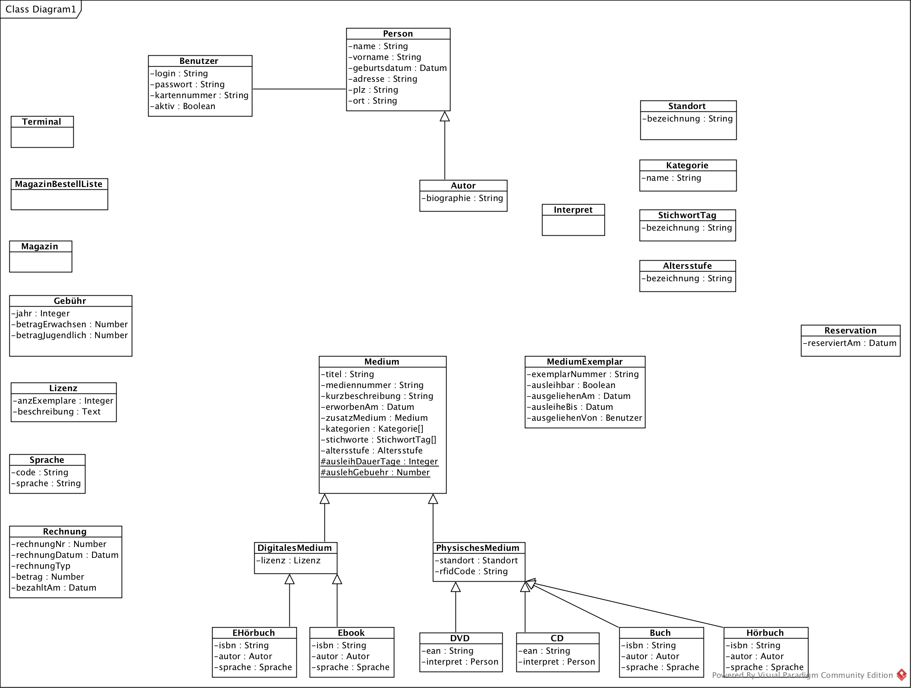
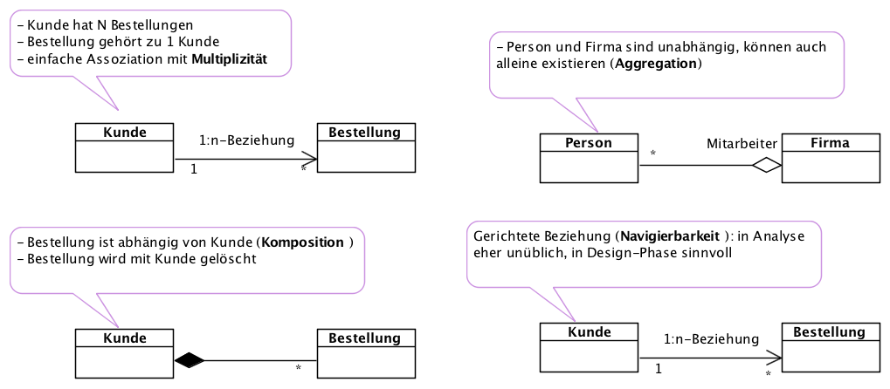

{% extends "../_base_template.html" %}
{% block title %}Lektion 5 - OOA - Klassenmodell{% endblock %}

{% block sections %}
<section data-markdown>
<textarea data-template>
<i class="fas fa-graduation-cap"></i> Thema: OOA - Klassenmodell
=============================

Heutiges Ziel
-------------

* Besprechung der Hausaufgabe: Wir besprechen das Klassenmodell mit Klassen, Attributen, Generalisierungen
* Sie wissen, was Assoziationen sind und können diese ermitteln und modellieren

### Hausaufgaben

* Fertigstellen des Klassenmodells:
* Klassendiagrammmit Assoziationen

</textarea>
</section>

<section>
    <section data-markdown data-separator-notes="^Note:">
    <textarea data-template>
    <i class="fas fa-flask"></i> Besprechen der Hausaufgabe: Klassenmodell
    ===========

    Wir besprechen das Klassenmodell mit Klassen, Attributen, Generalisierungen

    * Wie haben Sie folgende Entitäten modelliert:
      * Benutzer, Kunde, Jugendlicher, Erwachsener
      * Welche Vererbungsstruktur haben Sie gewählt?

    * Die Attribute **ISBN, Autor, Sprache** werden für mehrere Medien-Arten benötigt. Wie haben Sie dies im Diagramm modelliert?

    * Welche Klassen und Attribute haben Sie für die Medien gefunden? Welche Vererbungsstruktur haben Sie gewählt?

    Note:
    * Zu jeder Frage zeigt ein Schüler seine Lösung am Diagramm.
    * Am Schluss Aufzeigen meiner Beispiellösung, nächste Folie
    </textarea>
    </section>

    <section data-markdown data-separator-notes="^Note:">
    <textarea data-template>
    <i class="fas fa-flask"></i> Besprechen der Hausaufgabe: Beispiellösung
    ===========

    

    Note:
    * Ich habe bewusst auf die Beziehungen verzichtet: Diese finden wir erst im nächsten Schritt
    * Das Klassenmodell bildet KEINE technischen Details ab: Wir befinden uns in der Analysephase, wo wir bewusst auf technische Einschränkungen verzichten.
    * Es wurden auch nicht alle Attribute aufgezeigt, nur die für die Use Cases / Anforderungen wichtigsten.
    * Sie können auch mehrere Klassendiagramme anfertigen, um die Übersicht zu gewähren: Gruppieren Sie dann die Klassendiagramme z.B. nach Thema.
    </textarea>
    </section>
</section>

<section data-markdown data-separator-notes="^Note:">
<textarea data-template>
<i class="fas fa-flask"></i> Wo stehen wir?
===========

Wir sind an der fachlichen Analyse und erarbeiten exemplarisch das Klassenmodell:


Wir verzichten bewusst auf die weitere Analyse aus Zeitgründen.

Note:
* Wir werden in der Design-Phase Sequenz- Aktivitäts und Zustandsdiagramme kennenlernen.

</textarea>
</section>

<section>
<section data-markdown data-separator-notes="^Note:">
<textarea data-template>
<i class="fas fa-flask"></i> Finden von Assoziationen zwischen Klassen
===========

**Frage:**

Was sind Assoziationen? Was ist eine Aggregation, was eine Komposition?

* <!-- .element class="fragment" --> **Assoziationen** definiert Beziehungen zwischen Klassen.
* <!-- .element class="fragment" --> **Aggregation:** (selten in Analyse, besser einfache Assoziation): Teile sind unabhängig voneinander (zB. Benutzer hat Medien ausgeliehen → Medien bleiben bestehen, wenn Benutzer gelöscht wird)
* <!-- .element class="fragment" --> **Komposition:** „Besteht aus“: Teile sind Abhängig von der Klassen, die sie beinhaltet, und existieren nur so lange wie die Hauptklasse.

<div class="fragment">
<p>Assoziationen definieren wie in der realen Welt, wie Objekte "zusammenhängen".</p>
<p><strong>Beispiele:</strong></p>
<ul>
    <li>"Eine Firma **hat mehrere** Mitarbeiter (1:n)"</li>
    <li>"Eine Bestellung **gehört zu** einer Person" (1:1, n:1)</li>
    <li>"Eine Person ist Mitarbeiter einer Firma (**hat und gehört zu**, n:m)"</li>
</ul>
</div>

<p>&nbsp;</p>

<div class="fragment">
<i class="far fa-hand-point-right"></i> Schlagen Sie die UML-Notationen dieser Assoziationen selbständig nach, und zeichnen Sie ein Beispiel am Flipchart:
<ul>
    <li> 1:n (One-to-Many) </li>
    <li> n:1 (Many-to-One) </li>
    <li> 1:1 (One-to-One) </li>
    <li> n:m (Many-to-Many) </li>
    <li> Aggregation (Welcher Kardinalität entspricht dies?) </li>
    <li> Komposition (Welcher Kardinalität entspricht dies?) </li>
</ul>
</div>

</textarea>
</section>


<section data-markdown data-separator-notes="^Note:">
<textarea data-template>
<i class="fas fa-flask"></i> UML-Werkzeuge für Assoziationen
===========



*  Wir zeichnen **Assoziationen** zwischen Klassen
*  Alle Assoziationen besitzen eine **Multiplizität** (1:n, 1:1, n:m etc...)
*  **Kompositionen** und **Aggregationen** werden in der Analyse sparsam eingesetzt.
*  Wo notwendig, schreiben Sie einen Assoziations- oder Rollenname hin
* Verzichten Sie auf den Attribut-Member in der Klasse für Beziehungen. Besser Assoziationsname (z.B. kein "bestellung"-Attribut auf Kunde).

Note:
Die UML-Werkzeuge direkt in VisualParadigm zeigen. Möglichkeiten für die Assoziations-Definition kurz durchgehen. Schüler sollen
gleich mitmachen.
</textarea>
</section>
</section>

<section data-markdown data-separator-notes="^Note:">
<textarea data-template>
<i class="fas fa-flask"></i> Vorgehen zum Finden von Assoziationen zwischen Klassen
===========

** Nehmen Sie die Checkliste __003 Assoziationen__ zur Hand**

Wie auch bei der Klassenfindung dienen uns Dokument- und Use-Case-Analysen zur Findung von Assoziationen.
Mit steigernder Erfahrung findet dies gleichzeitig mit der Klassenfindung statt.

* Assoziationen **nur für die Aufgaben der Use-Cases definieren**, nicht alle fachlich möglichen
* Erster Schritt: Finden der **Assoziationen ohne Multiplizitäten**. Sind dies einfache Assoziationen, Aggregationen oder Kompositionen? Richtwert: Im Zweifelsfall einfache Assoziation, sonst Komposition. Aggregationen sind selten.
* Definieren der **Assoziationsnamen** / Rollennamen, wo nötig.
* Schnappschuss / Historie?
  * **Schnappschuss**: 0..1-Multiziplität (z.B. Buch hat Autor, Buch ist ausgeliehen von …).
  * **Historie**: Many-Multiplizität (zB. Benutzer hat Medien ausgeliehen)
* Liegt eine **Muss- oder Kann-Beziehung** vor? (0…, 1… 1..1)
</textarea>
</section>


<section data-markdown data-separator-notes="^Note:">
<textarea data-template>
<i class="fas fa-flask"></i> Übung: Finden von Assoziationen zwischen Klassen
===========

**Aufgabe:**

* Ergänzen Sie Ihr Klassenmodell um Assoziationen.
* Material:
  * **Checkliste 003 - Assoziationen** [(Moodle)](https://moodle.bztf.ch/pluginfile.php/26810/mod_folder/content/0/Checkliste_003_Assoziationen.pdf?forcedownload=1)
  * **Anforderungen an das Bibliothekssystem** [(Moodle)](https://moodle.bztf.ch/mod/resource/view.php?id=15218)
* Nehmen Sie die Checkliste zur Hand und lesen Sie sie durch.
* Suchen Sie mögliche Assoziationen (Abschnitt **Konstruktive Schritte** in der Checkliste)
* Ergänzen Sie Ihr UML-Klassendiagramm in VisualParadigm um Assoziationen
* **Bewerten** Sie Ihr Modell anhand des Abschnitts **Analytische Schritte** in den Checklisten: Dieses Kapitel hilft Ihnen, das Klassenmodell zu verbessern / zu bewerten.

* **Bedenken Sie** Dies ist das Analysemodell: Es zeigt noch KEINE technischen Zusammenhänge! Machen Sie sich noch KEINE Gedanken, wie Sie dies technisch umsetzen wollen!

**Abgabe**

* Das UML-Diagramm wie oben beschrieben als Hausaufgaben-Abgabe einreichen (PNG, PDF)

Note:
Als kurze Einführung zeige ich ein Beispiel anhand der Checkliste 003:
* Hinweis auf Aufbau der Checkliste: Konstruktive Schritte, Analytische Schritte
* erstes Beispiel zum Finden einer Assoziation: Buch < - > Sprache
* Schüler arbeiten lassen
* Hinweis auf Hausaufgabe
</textarea>
</section>

{% endblock %}
